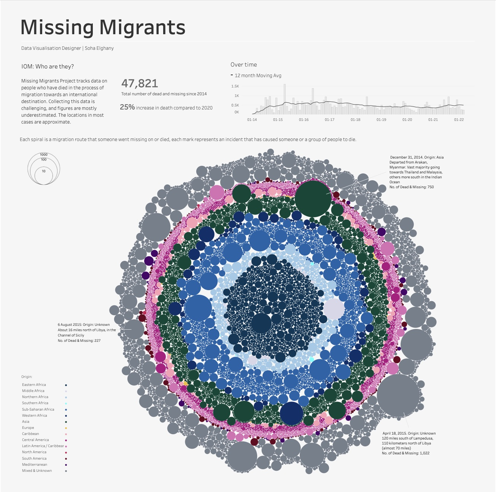

For this lab, I selected an infographic and wrote a critique analyzing how it worked as both art and information. I focused on how clearly the piece translated data, what the artistic choices added or took away, and how effectively it balanced creativity with meaning.
Visualization

Source: Soha Elghany on Tableau Public
Critique
The Missing Migrants Project, created by Soha Elghany, is a visual dataset of people who died or went missing during migration processes worldwide from 2014 to June 2022. This type of data visualization is called a Packed Bubble Chart, an easy way for viewers to understand data because circle size represents quantitative values, and color shows categories. With proper captioning and a brief summary to support her table, this visualization both artistically and respectfully represents the lives of one to thousands of migrants who were tragically killed or injured throughout their migration route. Each circular ring represents a migration route and origin location, as each dot represents an incident that has caused someone or a group of people to die; the bigger the dot, the more people died.
An obvious answer to what is gained through artistic interpretation is the immediate emotional impact and engagement this graph presents. Through its colors and design flow, the circular composition pulls the viewer in from a central viewpoint. Its simple pattern recognition can stimulate viewers' curiosity and might help the message of the data points stick in their memory. A packed bubble chart suggests hierarchy without labels, creating a shared understanding of grouping and layers without seeming overly text-heavy.
Although this chart is visually digestible, some drawbacks may reduce quantitative accuracy, limit accessibility and readability for people with visual impairments, and make it less efficient for someone trying to quickly process this type of data. Exact quantitative data is difficult to obtain on any chart and might be visualized more as a “rough guess” than as accurate points. From a static view of this graph, the only supporting text exists on the outside of the visual. When opened in Tableau, a viewer can hover over all bubbles to see each incident, location, and number of those impacted. Moreover, this is not a “quick answer” type of chart. It suggests both emotional depth and a deep understanding that require more than a quick skim.
I believe this artistic approach enhances the data’s meaning rather than hindering it, thanks to its use of minimal text and a strong visual design. With further investigation and interest in this graph, a viewer can explore a topic that, from a societally sensitive perspective, can lead one to think more deeply about the global migration crisis. Elghany emphasizes in her article that “each death is more than a statistic; it represents a human life, a story of hope, fear, and displacement…” (Elghany, 2022), and viewers can easily pick up on that notion.
Ethical considerations, accuracy to avoid misrepresented bias, and data collection – along with empathy and respect – were at the forefront for the success of this design. As much as each datapoint represents an individual, it also explores the digestion of this graph as a whole. This work balances artistic expression with informal integrity by making intentional choices that enhance engagement through color-coding and varying sizes, without completely obscuring the underlying data. While the artistic composition prioritizes visual and emotional impact, it also maintains informational integrity by representing proportions and groupings rather than distorting them for visual appeal.
I think the limited wording significantly affects the visual's emotional weight. In some aspects, the notion of “less is more” can have a deeper connection with the viewer than a text-heavy graph. In essence, I think that this packed bubble chart uses emotion to deepen understanding, not to replace critical thinking. By representing each missing or deceased person as a distinct mark and revealing personal details when the cursor hovers over them, the visual humanizes the statistics and encourages empathetic engagement. The emotional layer of this visual is intended to help viewers grasp the scale and human impact of this issue, not to create misleading datapoints.
Although this data visual is simple in its shape, it doesn’t offer much grace for those with visual impairments. The choice of colors representing each ring creates a darker palette and offers minimal distinction between categories. For someone who might be colorblind, graphs like this might be challenging to fully understand or read. As visually appealing as this might be to a regular viewer, a minimal text explanation could cause confusion and therefore exclude audiences who can and cannot understand the data. As a way to mitigate this issue, the author/artist could add non-color cues to distinguish categories, perhaps by adding patterns, outlines, or varying stroke depths, so the meaning behind each ring isn’t solely focused on colors.
All in all, I had an inspiring experience learning from Data to Art's website and the story behind how data can be transformed into meaningful art. As a creatively motivated individual, I find that websites and communities like Data to Art influence my ideas, goals, and passions simultaneously. I am deeply interested in the intersection of data and eye-catching visualization, and doing so through extended engagement. Discovering this website and exploring various artistic approaches to presenting statistics is a skill I would love to improve, so I can someday create my own portfolio of visualization techniques.